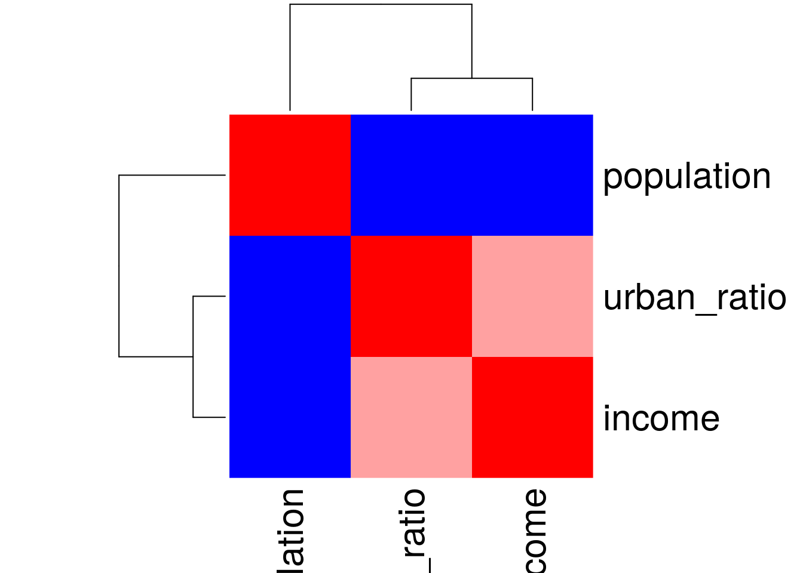
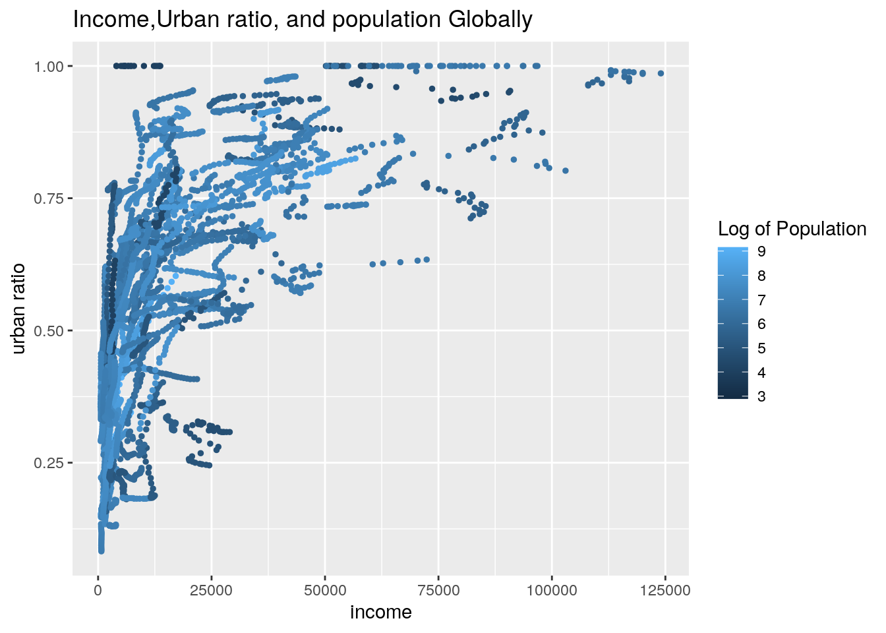
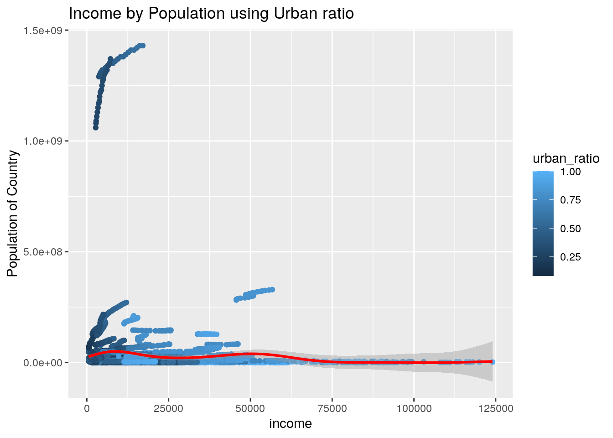
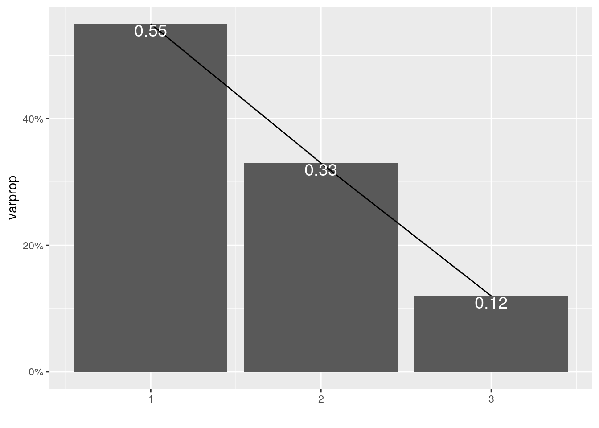
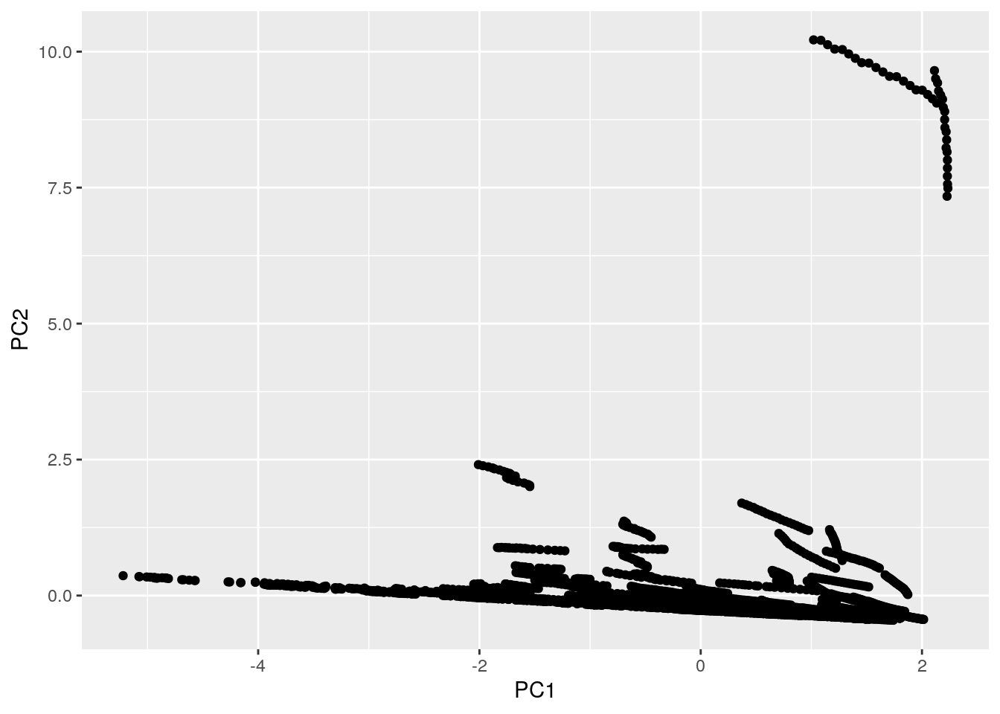

library(dplyr)
library(tidyr)
library(ggplot2)
library(tibble)
library(readr)
### importing datasets
income_per <- read_csv("income_per_person_gdppercapita_ppp_inflation_adjusted_MODIFY.csv")
pop_total <- read_csv("population_total_modified.csv")
urban_pop <- read_csv("urban_population_percent_of_total_modified.csv")I knew I wanted to compare countries with each other, so at first I was exploring specific countries to compare. I was primarily using US data vs EU countries. I then thought why not do all countries so I decided to use Gapminder, which has data on all global countries avalible. This would allow my results to be on a global scale. I first wanted to compare the Income per person in each contry to the total amount of population in a country. I wanted to see if the size of a country's citizens affect how much income they make. As a higher population can mean more customers or workers. The first two datasets was untidy and contained the country name to the data it was recorded. I realized I need another numeric variable and decided to include the ratio of urbanization based on the ppulation that lived in the city of a country. This would add more depth and allow me to see if urbanization plays a factor in the average income per person. This had year, country, and the ratio of urbanization population. I might see a higher ratio of income per person for a higher ratio of urbanization due to a more industralized economy of the city.
tidy_pop <- pop_total %>% pivot_longer(c("2000", "2001", "2002",
"2003", "2004", "2005", "2006", "2007", "2008", "2009", "2010",
"2011", "2012", "2013", "2014", "2015", "2016", "2017", "2018",
"2019"), names_to = "year", values_to = "population")
tidy_pop <- tidy_pop %>% na.omit()
tidy_income <- income_per %>% pivot_longer(c("2000", "2001",
"2002", "2003", "2004", "2005", "2006", "2007", "2008", "2009",
"2010", "2011", "2012", "2013", "2014", "2015", "2016", "2017",
"2018", "2019"), names_to = "year", values_to = "income")
tidy_income <- tidy_income %>% na.omit()
tidy_urban <- urban_pop %>% pivot_longer(c("2000", "2001", "2002",
"2003", "2004", "2005", "2006", "2007", "2008", "2009", "2010",
"2011", "2012", "2013", "2014", "2015", "2016", "2017", "2018",
"2019"), names_to = "year", values_to = "urban_ratio")
tidy_urban <- tidy_urban %>% na.omit()All datasets used were not tidy and needed to be tidy. The dates were column headers for all the datasets and were tidy to a data column and a new column for each value was created. "tidy_urban" created a column for "year" and column for "urban_ratio". "tidy_pop" created a column for "year" and column for "pop". "tidy_income" created a column for "year" and column for "income". The orginal dataset was pipped into the pivot_longer function to create new columns for year and the specific value.
Full_Data <- tidy_pop %>% left_join(tidy_urban) %>% left_join(tidy_income)I chose the dplry function called left_join to merge my data sets. the tidy_income had 11580 observations, tidy_pop had 11700 observations and tidy_urban had 11640 observation with each data set that had 3 variables. 2 of the variables from the dataset are the same, year and country. I used left_join becauseit keeps all rows from the original add merges the datasets based on what columns match. Since I had two column match for each dataset, the left_join function was able to joinall datasets with the matching columns. It was helpful, because I got all datasets from the same database which used the same countries and years. There was no data needed to be omitted, because all the datasets had matching year and countries, so no unknown columns.
### correlation matrix of all using select function
corrmat <- Full_Data %>% na.omit %>% select_if(is.numeric) %>%
cor()
corrmat## population urban_ratio income
## population 1.00000000 -0.0566081 -0.04864217
## urban_ratio -0.05660810 1.0000000 0.64779412
## income -0.04864217 0.6477941 1.00000000The select function, dplyr function, was used to make a correlational matrix of the numeric values in the dataset. It shows a reltively strong postive correlation between the ratio of urban population and the income per person. This means as more population of a country is at urban areas, the more likely the average income per person increases as well. This shows a correlation of wealth and urbanization, which was predicted. There is a small negative correlation between total poplation of the country and income per person as well as urban ratio. This is unexpected, as I thought with more people there would be more job opportunities and labour supply for production output. This shows a small corelation aganist that.
### Mean income of each country using group_by and summarize
### functions
Full_Data %>% group_by(country) %>% summarize(mean(income, na.rm = T))## # A tibble: 195 x 2
## country `mean(income, na.rm = T)`
## <chr> <dbl>
## 1 Afghanistan 1408.
## 2 Albania 9232.
## 3 Algeria 12655
## 4 Andorra 41800
## 5 Angola 5679
## 6 Antigua and Barbuda 22015
## 7 Argentina 17245
## 8 Armenia 6608
## 9 Australia 41135
## 10 Austria 43085
## # … with 185 more rowsmean_income_country <- Full_Data %>% group_by(country) %>% summarize(mean(income,
na.rm = T))The group_by and summarize functions were used to find the mean income of each country in the dataset. The highest avergae income per person seems to be in Qatar while the lowest is in Somalia based on the new dataset created, mean_income_country.
# urban ratio of year 2019 using filter and arrange function
Full_Data %>% filter(year == "2019") %>% arrange(desc(urban_ratio,
na.rm = T))## # A tibble: 195 x 5
## country year population urban_ratio income
## <chr> <chr> <dbl> <dbl> <dbl>
## 1 Kuwait 2019 4210000 1 64100
## 2 Monaco 2019 39000 1 61400
## 3 Nauru 2019 10800 1 13600
## 4 Singapore 2019 5800000 1 90100
## 5 Qatar 2019 2830000 0.992 113000
## 6 Belgium 2019 11500000 0.98 43500
## 7 San Marino 2019 33900 0.974 57800
## 8 Uruguay 2019 3460000 0.954 20900
## 9 Malta 2019 440000 0.947 39300
## 10 Iceland 2019 339000 0.939 47900
## # … with 185 more rowsThe filter and arrange function was used to chose the year of 2019 and isolate the ratio of population living in urban areas from descending order. Suprisingly, the data states that Kuwait has close to hundred percent of population living in an urban enviroment. This is unexpected as I though the highest income country, Qatar, would be the highest urbanization. Moanaco, Kuwait, Naru, and Singapore are all fully urbanized population.
### New variable pop_by_mil created using mutate
Full_Data %>% mutate(pop_by_mil = population/1e+06)## # A tibble: 3,900 x 6
## country year population urban_ratio income pop_by_mil
## <chr> <chr> <dbl> <dbl> <dbl> <dbl>
## 1 Afghanistan 2000 20800000 0.221 687 20.8
## 2 Afghanistan 2001 21600000 0.222 646 21.6
## 3 Afghanistan 2002 22600000 0.223 1020 22.6
## 4 Afghanistan 2003 23700000 0.224 1060 23.7
## 5 Afghanistan 2004 24700000 0.225 1030 24.7
## 6 Afghanistan 2005 25700000 0.227 1100 25.7
## 7 Afghanistan 2006 26400000 0.229 1120 26.4
## 8 Afghanistan 2007 27100000 0.231 1250 27.1
## 9 Afghanistan 2008 27700000 0.233 1270 27.7
## 10 Afghanistan 2009 28400000 0.235 1500 28.4
## # … with 3,890 more rowsThe mutate function was used to created a new variable called pop_by_mil. This represents the total population of a country in the millions instead. This helps understanding and with analyzing results in more understandable way.Full_Data was pipped into mutate and the population variabe was manuplated by dividing by a million.
### MEAN of variables by country using group_by and summarize
### function
Full_Data %>% group_by(country) %>% summarize_if(is.numeric,
mean, na.rm = T) %>% head()## # A tibble: 6 x 4
## country population urban_ratio income
## <chr> <dbl> <dbl> <dbl>
## 1 Afghanistan 29310000 0.237 1408.
## 2 Albania 2988500 0.515 9232.
## 3 Algeria 36220000 0.669 12655
## 4 Andorra 78010 0.895 41800
## 5 Angola 23350000 0.590 5679
## 6 Antigua and Barbuda 87005 0.273 22015The group_by and summarize function was used to compute the mean of the variable representing the country. The country is group_by and the summarize function is used to find the mean of the different numeric variables. This mean adds all the variations in population, urban_ratio, and income throughout the years into one area.
### STANDARD DEVIATION of variables by country using group_by
### and summarize function
Full_Data %>% group_by(country) %>% summarize_if(is.numeric,
sd, na.rm = T) %>% head()## # A tibble: 6 x 4
## country population urban_ratio income
## <chr> <dbl> <dbl> <dbl>
## 1 Afghanistan 5325796. 0.0119 392.
## 2 Albania 99698. 0.0623 2225.
## 3 Algeria 3793290. 0.0417 1154.
## 4 Andorra 5519. 0.0143 6342.
## 5 Angola 4868427. 0.0486 983.
## 6 Antigua and Barbuda 6827. 0.0259 2138.The group_by and summarize function was used to compute the standard deviation of the variable representing the country. The country is group_by and the summarize function is used to find the standard deviation of the different numeric variables. Thisshows that those with higher standard deviation in any category means that there are more differences between each year of a country.
### VARIANCE of variables by country using group_by and
### summarize function
Full_Data %>% group_by(country) %>% summarize_if(is.numeric,
var, na.rm = T) %>% head()## # A tibble: 6 x 4
## country population urban_ratio income
## <chr> <dbl> <dbl> <dbl>
## 1 Afghanistan 2.84e13 0.000141 153817.
## 2 Albania 9.94e 9 0.00388 4951136.
## 3 Algeria 1.44e13 0.00174 1331026.
## 4 Andorra 3.05e 7 0.000204 40224211.
## 5 Angola 2.37e13 0.00236 965873.
## 6 Antigua and Barbuda 4.66e 7 0.000673 4570816.The group_by and summarize function was used to compute the variance of the variable representing the country. The country is group_by and the summarize function is used to find the standard deviation of the different numeric variables. This shows that those with higher variance in any category means a larger avergae point in which each point differs.
### MINIMUM of variables by country using group_by and
### summarize function
Full_Data %>% group_by(country) %>% summarize_if(is.numeric,
min, na.rm = T) %>% head()## # A tibble: 6 x 4
## country population urban_ratio income
## <chr> <dbl> <dbl> <dbl>
## 1 Afghanistan 20800000 0.221 646
## 2 Albania 2880000 0.417 5440
## 3 Algeria 31000000 0.599 10300
## 4 Andorra 65400 0.88 31700
## 5 Angola 16400000 0.501 3890
## 6 Antigua and Barbuda 76000 0.245 19400The group_by and summarize function was used to compute the minimum of the variable representing the country. The country is group_by and the summarize function is used to find the minimum of the different numeric variables. The minimum represent the lowest amount of population, urban ratio, or income per person in any given country.
### MAXIMUM of variables by country using group_by and
### summarize function
Full_Data %>% group_by(country) %>% summarize_if(is.numeric,
max, na.rm = T) %>% head()## # A tibble: 6 x 4
## country population urban_ratio income
## <chr> <dbl> <dbl> <dbl>
## 1 Afghanistan 38000000 0.258 1810
## 2 Albania 3130000 0.612 12700
## 3 Algeria 43100000 0.732 14000
## 4 Andorra 84500 0.924 53200
## 5 Angola 31800000 0.662 6810
## 6 Antigua and Barbuda 97100 0.321 26500The group_by and summarize function was used to compute the maximum of the variable representing the country. The country is group_by and the summarize function is used to find the minimum of the different numeric variables. The maximum represent the highest amount of population, urban ratio, or income per person in any given country.
### MEAN of variables by year using group_by and summarize
### function
Full_Data %>% group_by(year) %>% summarize_if(is.numeric, mean,
na.rm = T) %>% head()## # A tibble: 6 x 4
## year population urban_ratio income
## <chr> <dbl> <dbl> <dbl>
## 1 2000 31336214. 0.530 14236.
## 2 2001 31748300. 0.534 14394.
## 3 2002 32126600. 0.537 14577.
## 4 2003 32551468. 0.540 14900.
## 5 2004 32925631. 0.543 15489.
## 6 2005 33358510. 0.546 15898.The group_by and summarize function was used to compute the mean of the variable representing the year. The year is group_by and the summarize function is used to find the minimum of the different numeric variables. The maximum represent the highest amount of population, urban ratio, or income per person in any given year.
### STANDARD DEVIATION of variables by year using group_by and
### summarize function
Full_Data %>% group_by(year) %>% summarize_if(is.numeric, sd,
na.rm = T) %>% head()## # A tibble: 6 x 4
## year population urban_ratio income
## <chr> <dbl> <dbl> <dbl>
## 1 2000 123049084. 0.234 18512.
## 2 2001 124544355. 0.234 18531.
## 3 2002 125612673. 0.233 18653.
## 4 2003 127120006. 0.233 18980.
## 5 2004 128099992. 0.233 19616.
## 6 2005 129615376. 0.233 19624.The group_by and summarize function was used to compute the standard deviation of the variable representing the year. The year is group_by and the summarize function is used to find the standard deviation of the different numeric variables. This shows that those with higher standard deviation in any category means that there are more differences between all country per year.
### VARIANCE of variables by year using group_by and summarize
### function
Full_Data %>% group_by(year) %>% summarize_if(is.numeric, var,
na.rm = T) %>% head()## # A tibble: 6 x 4
## year population urban_ratio income
## <chr> <dbl> <dbl> <dbl>
## 1 2000 1.51e16 0.0549 342707229.
## 2 2001 1.55e16 0.0547 343401862.
## 3 2002 1.58e16 0.0545 347921738.
## 4 2003 1.62e16 0.0544 360221714.
## 5 2004 1.64e16 0.0543 384771396.
## 6 2005 1.68e16 0.0542 385094342.The group_by and summarize function was used to compute the variance of the variable representing the year. The year is group_by and the summarize function is used to find the standard deviation of the different numeric variables. This shows that those with higher variance in any category means a larger avergae point in which each point differs.
### MINIMUM of variables by year using group_by and summarize
### function
Full_Data %>% group_by(year) %>% summarize_if(is.numeric, min,
na.rm = T) %>% head()## # A tibble: 6 x 4
## year population urban_ratio income
## <chr> <dbl> <dbl> <dbl>
## 1 2000 790 0.0825 573
## 2 2001 792 0.0846 545
## 3 2002 792 0.0868 545
## 4 2003 792 0.0891 558
## 5 2004 795 0.0914 577
## 6 2005 798 0.0938 594The group_by and summarize function was used to compute the minimum of the variable representing the year. The year is group_by and the summarize function is used to find the minimum of the different numeric variables. The minimum represent the lowest amount of population, urban ratio, or income per person at any given year.
### MAXIMUM of variables by year using group_by and summarize
### function
Full_Data %>% group_by(year) %>% summarize_if(is.numeric, max,
na.rm = T) %>% head()## # A tibble: 6 x 4
## year population urban_ratio income
## <chr> <dbl> <dbl> <dbl>
## 1 2000 1290000000 1 108000
## 2 2001 1300000000 1 108000
## 3 2002 1310000000 1 111000
## 4 2003 1320000000 1 109000
## 5 2004 1320000000 1 117000
## 6 2005 1330000000 1 110000The group_by and summarize function was used to compute the maximum of the variable representing the year. The year is group_by and the summarize function is used to find the minimum of the different numeric variables. The maximum represent the highest amount of population, urban ratio, or income per person at any given year.
corrheat <- colorRampPalette(c("blue", "white", "red"))(20)
heatmap(corrmat, col = corrheat, symm = TRUE) The more red the color is means the more postive correlation it holds. The more blue means more negative correlation occurs relatively to the others. The intensity of the boxes shows the magnitude of the correlation.
ggplot(Full_Data, aes(income, urban_ratio, color = log10(population)),
stat = "summary") + geom_point(size = 1) + scale_y_continuous("urban ratio") +
scale_x_continuous("income") + labs(color = "Log of Population") +
ggtitle("Income,Urban ratio, and population Globally") This shows a steep curve for the increasing urbanization to increasing income.There seems to be a correlation with income and urban ratio. Although some countries with high urban ratio have low income. The population does not seem to have an effect on the urbanization nor income. The population does not have an effect based on the graph. The population variable was logged to show a strenghtened correlation, but that did not have an effect on the presentation of the data.
ggplot(data = Full_Data, aes(x = income, y = population)) + geom_point(aes(color = urban_ratio)) +
stat_smooth(method = "gam", formula = y ~ s(x), size = 1,
color = "red") + xlab("income") + scale_y_continuous(name = "Population of Country") +
ggtitle("Income by Population using Urban ratio") The graph above shows a largely skewed data in which the population is vastly different. It shows that the larger income have a relatively smaller population and a medium urban ratio. The line shows the flow of the data in which the income and the population have relatively little effect on the population. There seems to be little to no correlation between the population and income as the line shown has a slope that is close to being flat.The line above flows that trend. Large porportion of the population is centered around the low income area, but many points that cannot be removed due to massive unjustifable removal of data. Removing this amount of countries will defeat the purpose of a global outlook.
### Normalize the Data
data_norm <- Full_Data %>% select_if(is.numeric) %>% na.omit %>%
scaleThe data was normalized for the first step of PCA. To normalize the data, only numeric values were chosen and NAs were omitted. The scale is causing the mean=0 and sd=1.
### Running the princomp function
data_pca <- princomp(data_norm)
### Summary of Results
summary(data_pca, loadings = T)## Importance of components:
## Comp.1 Comp.2 Comp.3
## Standard deviation 1.2867808 0.9956662 0.5933508
## Proportion of Variance 0.5520782 0.3305362 0.1173855
## Cumulative Proportion 0.5520782 0.8826145 1.0000000
##
## Loadings:
## Comp.1 Comp.2 Comp.3
## population 0.113 0.994
## urban_ratio -0.703 0.707
## income -0.702 -0.707The summary is the overview for what is happening. The Importance of components shows what variables to keep.
# Calculating Eigenvalues
eigval <- data_pca$sdev^2
# Proportion of Variation Explained by Eigenvalues
varprop = round(eigval/sum(eigval), 2)
# Proportion of Variation Plots
ggplot() + geom_bar(aes(y = varprop, x = 1:3), stat = "identity") +
xlab("") + geom_path(aes(y = varprop, x = 1:3)) + geom_text(aes(x = 1:3,
y = varprop, label = round(varprop, 2)), vjust = 1, col = "white",
size = 5) + scale_y_continuous(breaks = seq(0, 0.6, 0.2),
labels = scales::percent) + scale_x_continuous(breaks = 1:3) The graph above is the scree plot which shows the variable that are needed to be kept. Based on the graph all the variables need to be kept, because the line does not start to flatten and is very steep.
# Cumulative Proportion of Variance
round(cumsum(eigval)/sum(eigval), 2)## Comp.1 Comp.2 Comp.3
## 0.55 0.88 1.00The rule is to pick the PCs until cumulative proportion of variance is greater than 80%. Based on the rule, we should only keep by the first PC.
eigval## Comp.1 Comp.2 Comp.3
## 1.6558048 0.9913513 0.3520652Based on the eigvel values only the first PC is kept, because it is greater than 1.
### The rules of thumb elminated all PCs except for the first
### one. Due to this graphing and visualizing is impossible.
### Graphing was done to show competence of the code Plotting
### PC1 vs PC2
df <- data.frame(PC1 = data_pca$scores[, 1], PC2 = data_pca$scores[,
2])
ggplot(df, aes(PC1, PC2)) + geom_point() The graph was only coded to show competence, but only the first PC passed all the rules of thumb when finding deciding the PCs to keep. Again, only PC1 passed all asumptions and PC2 failed.
...